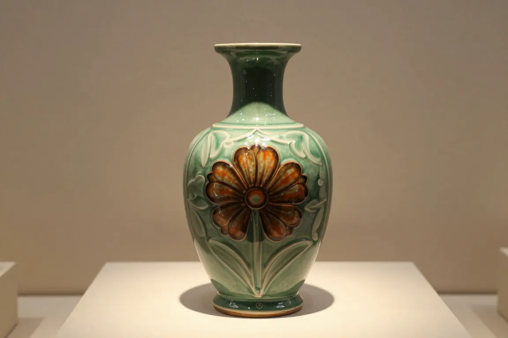

keramikk · 1880–1940 · også: Rookwoods standardglasurkeramikk, Grueby matt keramikk, Amerikansk Arts and Crafts-keramikk
Kunstkeramikk fra amerikanske pottemakerier etter 1880. Rookwood malte slipp under en klar glasur, og Grueby laget tykke matte grønne glasurer til vaser med bladformer.

Kjerneidé
Et kunstnerisk pottemakeri kan gjøre en vase til et maleri eller et blad: den ene linjen maler i slipp under glasur, og den andre bygger formen i matt farge.
Designprinsipper
Mal motivet i farget slipp på fuktig leire, slik at fargene flyter sammen som en akvarell.
Dekk det malte stykket med en klar blank glasur, standardglasuren, og brenn det én gang.
Gradér bunnen fra mørk brun til oransje, oliven eller gul med en forstøversprøyte.
Mal én blomst, fisk eller ett portrett på hver vase; maleren signerer med et monogram.
For en matt linje, bruk en tykk glasur på 1 til 2 mm i én farge, først og fremst grønn.
Form bladet og stilken i veggen, og la glasuren samle seg i fordypningene.
Merk hvert stykke på bunnen med en stempel, en datokode og et formnummer.
Brenn i oksidasjon ved omtrent 1100 til 1250 °C for leirgods og 1250 °C for steingods.